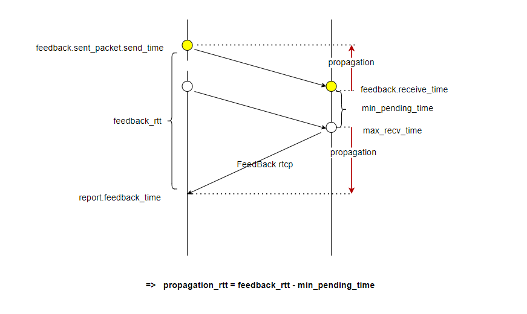

Webrtc M121
webrtc中的部分码控结构，从socket层接收到数据后，到transport解析rtcp包处理得到feedback，通过call将feedback转发到对应sendstream上的rtcp处理模块，最终通过RtpTransportControllerSend将feedback转发到GoogCcNetworkController进行码率预估后，把预估的码率(target bitrate)， 探测策略(probe config), congestion windows给pacer，pacer转发给pacingContrller去使用进行发送码率控制
ProbeBitrateEstimator : 根据feedback计算探测码率，PacingController中会将包按照cluster进行划分，transport-CC报文能得到包所属的cluster以及发送和接收信息，通过发送和接收的数据大小比判断是否到达链路上限从而进行带宽探测
AcknowledgedBitrateEstimator : 估算当前的吞吐量
webrtc编码和发送的过程
webrtc::VideoStreamEncoder::OnFrame
这里的编码器是 LibvpxVp8Encoder，但换成其他继承自 webrtc::VideoEncoder 的子类都是可以的，比如 VP9Encoder 或者 H264Encoder。
RtpTransportControllerSend类 RtpTransportControllerSend类封装了带宽估计、拥塞控制等相关的对象：
1 2 3 4 5 6 7 8 9 10 11 12 13 14 15 16 17 18 19 20 21 22 class RtpTransportControllerSend final : public RtpTransportControllerSendInterface, public NetworkLinkRtcpObserver, public TransportFeedbackObserver, public NetworkStateEstimateObserver { private : TaskQueuePacedSender pacer_; TargetTransferRateObserver* observer_; NetworkControllerFactoryInterface* const controller_factory_override_; TransportFeedbackAdapter transport_feedback_adapter_; std::unique_ptr<CongestionControlHandler> control_handler_; std::unique_ptr<NetworkControllerInterface> controller_; }
创建std::unique_ptr<NetworkControllerInterface> controller_。
GoogCcNetworkController类 GoogCcNetworkController是带宽估计和调整的核心。在RtpTransportControllerSend::MaybeCreateControllers函数创建
1 2 3 4 5 6 7 8 9 10 11 12 13 14 15 16 17 void RtpTransportControllerSend::MaybeCreateControllers () if (controller_factory_override_) { RTC_LOG (LS_INFO) << "Creating overridden congestion controller" ; controller_ = controller_factory_override_->Create (initial_config_); process_interval_ = controller_factory_override_->GetProcessInterval (); } else { RTC_LOG (LS_INFO) << "Creating fallback congestion controller" ; controller_ = controller_factory_fallback_->Create (initial_config_); process_interval_ = controller_factory_fallback_->GetProcessInterval (); } UpdateControllerWithTimeInterval (); StartProcessPeriodicTasks (); }
调用的部分功能如下：
1 2 3 4 5 6 7 8 9 void RtpTransportControllerSend::UpdateControllerWithTimeInterval () RTC_DCHECK (controller_); ProcessInterval msg; msg.at_time = Timestamp::Millis (env_.clock ().TimeInMilliseconds ()); if (add_pacing_to_cwin_) msg.pacer_queue = pacer_.QueueSizeData (); PostUpdates (controller_->OnProcessInterval (msg)); }
1 2 3 4 5 6 7 8 9 10 11 12 13 14 15 16 17 18 19 20 21 22 23 24 25 void RtpTransportControllerSend::StartProcessPeriodicTasks () RTC_DCHECK_RUN_ON (&sequence_checker_); if (!pacer_queue_update_task_.Running ()) { pacer_queue_update_task_ = RepeatingTaskHandle::DelayedStart ( task_queue_, kPacerQueueUpdateInterval, [this ]() { RTC_DCHECK_RUN_ON (&sequence_checker_); TimeDelta expected_queue_time = pacer_.ExpectedQueueTime (); control_handler_->SetPacerQueue (expected_queue_time); UpdateControlState (); return kPacerQueueUpdateInterval; }); } controller_task_.Stop (); if (process_interval_.IsFinite ()) { controller_task_ = RepeatingTaskHandle::DelayedStart ( task_queue_, process_interval_, [this ]() { RTC_DCHECK_RUN_ON (&sequence_checker_); UpdateControllerWithTimeInterval (); return process_interval_; }); } }
定时检测更新码率 GoogCcNetworkController::OnProcessInterval会定时触发进行带宽检测和更新。
1 2 3 4 5 6 7 8 9 10 11 12 13 14 15 16 17 18 19 20 21 22 23 24 25 26 27 28 29 30 31 32 33 34 35 36 37 38 39 40 41 42 43 44 45 46 47 48 49 50 51 52 53 54 55 56 57 58 59 60 61 62 63 64 65 66 67 68 69 70 71 72 73 74 75 76 77 78 79 80 81 82 83 84 85 86 87 88 NetworkControlUpdate GoogCcNetworkController::OnProcessInterval ( ProcessInterval msg) NetworkControlUpdate update; if (initial_config_) { update.probe_cluster_configs = ResetConstraints (initial_config_->constraints); update.pacer_config = GetPacingRates (msg.at_time); if (initial_config_->stream_based_config.requests_alr_probing) { probe_controller_->EnablePeriodicAlrProbing ( *initial_config_->stream_based_config.requests_alr_probing); } absl::optional<DataRate> total_bitrate = initial_config_->stream_based_config.max_total_allocated_bitrate; if (total_bitrate) { auto probes = probe_controller_->OnMaxTotalAllocatedBitrate ( *total_bitrate, msg.at_time); update.probe_cluster_configs.insert (update.probe_cluster_configs.end (), probes.begin (), probes.end ()); } initial_config_.reset (); } if (congestion_window_pushback_controller_ && msg.pacer_queue) { congestion_window_pushback_controller_->UpdatePacingQueue ( msg.pacer_queue->bytes ()); } bandwidth_estimation_->UpdateEstimate (msg.at_time); absl::optional<int64_t > start_time_ms = alr_detector_->GetApplicationLimitedRegionStartTime (); probe_controller_->SetAlrStartTimeMs (start_time_ms); auto probes = probe_controller_->Process (msg.at_time); update.probe_cluster_configs.insert (update.probe_cluster_configs.end (), probes.begin (), probes.end ()); if (rate_control_settings_.UseCongestionWindow () && !feedback_max_rtts_.empty ()) { UpdateCongestionWindowSize (); } if (congestion_window_pushback_controller_ && current_data_window_) { congestion_window_pushback_controller_->SetDataWindow ( *current_data_window_); } else { update.congestion_window = current_data_window_; } MaybeTriggerOnNetworkChanged (&update, msg.at_time); return update; }
TWCC更新码率 收到TWCC-feedback包时候也会更新码率。TWCC-feedback包内容参看 TWCC扩展RTP和RTCP 。
TFB-GCC实现的流程可以理解为:SDP协商->发送端发送RTP报文->接收端接收RTP报文及并存储信息->接收端构造Transport-CC RR报文->发送端解析Transport-CC RR报文->发送端码率估计。
WebRtc基于transport wide cc 的延迟动态码率估计主要分成四大部分，如下：
RTP扩展 RTP添加的扩展如下：
1 2 3 4 5 6 7 0 1 2 3 0 1 2 3 4 5 6 7|0 1 2 3 4 5 6 7|0 1 2 3 4 5 6 7|0 1 2 3 4 5 6 7 +-+-+-+-+-+-+-+-+-+-+-+-+-+-+-+-+-+-+-+-+-+-+-+-+-+-+-+-+-+-+-+-+ | 0xBE | 0xDE | length=1 | +-+-+-+-+-+-+-+-+-+-+-+-+-+-+-+-+-+-+-+-+-+-+-+-+-+-+-+-+-+-+-+-+ | ID | L=1 |transport-wide sequence number | zero padding | +-+-+-+-+-+-+-+-+-+-+-+-+-+-+-+-+-+-+-+-+-+-+-+-+-+-+-+-+-+-+-+-+
2字节的transport-wide sequence number是传输层序列号，会添加到每个要发送的RTP包，发送端每发送一个RTP包序列号就会累加1。当发送端发送多路流时，所有流的 RTP 包的该扩展字段都是连续计数的，不会分开独立计数 。该扩展头的作用是为了标识发送的包和反馈的包对应关系，用来进行码率估计；而RTP报文中的序列号是媒体流的序列号，主要用来组帧和抗丢包，同时也用来分离媒体。
Webrtc中调用RTPSender::AllocatePacket函数给RTP包分配内存时，会给RTP扩展预分配内存。若注册了（registered）某个扩展，会对相应的内容进行赋值。
1 2 3 4 5 6 7 8 9 10 11 12 13 14 std::unique_ptr<RtpPacketToSend> RTPSender::AllocatePacket ( rtc::ArrayView<const uint32_t > csrcs) auto packet = std::make_unique <RtpPacketToSend>(&rtp_header_extension_map_, max_packet_size_); packet->SetSsrc (ssrc_); packet->SetCsrcs (csrcs); packet->ReserveExtension <AbsoluteSendTime>(); packet->ReserveExtension <TransmissionOffset>(); packet->ReserveExtension <TransportSequenceNumber>(); }
以视频为例，RtpVideoSender构造函数中注册扩展的过程为：
1 2 3 4 5 6 7 8 9 10 11 12 13 14 15 16 17 18 19 20 21 22 23 24 25 26 27 28 29 30 31 32 33 34 35 36 37 38 39 40 41 42 43 44 45 46 47 48 RtpVideoSender::RtpVideoSender (){ for (size_t i = 0 ; i < rtp_config_.extensions.size (); ++i) { const std::string& extension = rtp_config_.extensions[i].uri; int id = rtp_config_.extensions[i].id; RTC_DCHECK (RtpExtension::IsSupportedForVideo (extension)); for (const RtpStreamSender& stream : rtp_streams_) { stream.rtp_rtcp->RegisterRtpHeaderExtension (extension, id); } } } void ModuleRtpRtcpImpl2::RegisterRtpHeaderExtension (absl::string_view uri, int id) bool registered = rtp_sender_->packet_generator.RegisterRtpHeaderExtension (uri, id); RTC_CHECK (registered); } bool RTPSender::RegisterRtpHeaderExtension (absl::string_view uri, int id) MutexLock lock (&send_mutex_) ; bool registered = rtp_header_extension_map_.RegisterByUri (id, uri); supports_bwe_extension_ = HasBweExtension (rtp_header_extension_map_); UpdateHeaderSizes (); return registered; } bool HasBweExtension (const RtpHeaderExtensionMap& extensions_map) return extensions_map.IsRegistered (kRtpExtensionTransportSequenceNumber) || extensions_map.IsRegistered (kRtpExtensionTransportSequenceNumber02) || extensions_map.IsRegistered (kRtpExtensionAbsoluteSendTime) || extensions_map.IsRegistered (kRtpExtensionTransmissionTimeOffset); } bool RTPSender::SupportsPadding () const MutexLock lock (&send_mutex_) ; return sending_media_ && supports_bwe_extension_; }
SDP协商 视频的AddDefaultFeedbackParams函数和音频的WebRtcVoiceEngine::CollectCodecs函数在收集Feedback Param参数时候的一个函数调用：
1 codec->AddFeedbackParam (FeedbackParam (kRtcpFbParamTransportCc, kParamValueEmpty));
启用TWCC需要在SDP数据中添加一条:
1 a=extmap:5 http://www.ietf.org/id/draft-holmer-rmcat-transport-wide-cc-extensions-01
SDP协商过程不变。
发送端构造发送RTP报文 PacketRouter::SendPacket函数会在发送packet之前给TWCC扩展的每个RTP包头设置对应的TransportSequenceNumber，然后进行发送：
1 2 3 4 5 6 7 8 9 10 11 12 13 14 15 16 17 18 19 20 21 22 23 24 25 26 27 28 29 30 31 32 void PacketRouter::SendPacket (std::unique_ptr<RtpPacketToSend> packet, const PacedPacketInfo& cluster_info) bool assign_transport_sequence_number = packet->HasExtension <TransportSequenceNumber>(); if (assign_transport_sequence_number) { packet->SetExtension <TransportSequenceNumber>((transport_seq_ + 1 ) & 0xFFFF ); } uint32_t ssrc = packet->Ssrc (); auto it = send_modules_map_.find (ssrc); if (it == send_modules_map_.end ()) { RTC_LOG (LS_WARNING) << "Failed to send packet, matching RTP module not found " "or transport error. SSRC = " << packet->Ssrc () << ", sequence number " << packet->SequenceNumber (); return ; } RtpRtcpInterface* rtp_module = it->second; if (!rtp_module->TrySendPacket (std::move (packet), cluster_info)) { RTC_LOG (LS_WARNING) << "Failed to send packet, rejected by RTP module." ; return ; } modules_used_in_current_batch_.insert (rtp_module); }
ModuleRtpRtcpImpl2::TrySendPacket用于发送RTP数据包:
1 2 3 4 5 6 7 8 9 10 11 12 13 14 15 16 17 18 19 20 21 22 23 24 25 26 27 28 bool ModuleRtpRtcpImpl2::TrySendPacket (std::unique_ptr<RtpPacketToSend> packet, const PacedPacketInfo& pacing_info) RTC_DCHECK (rtp_sender_); RTC_DCHECK_RUN_ON (&rtp_sender_->sequencing_checker); if (!rtp_sender_->packet_generator.SendingMedia ()) { return false ; } if (packet->packet_type () == RtpPacketMediaType::kPadding && packet->Ssrc () == rtp_sender_->packet_generator.SSRC () && !rtp_sender_->sequencer.CanSendPaddingOnMediaSsrc ()) { return false ; } bool is_flexfec = packet->packet_type () == RtpPacketMediaType::kForwardErrorCorrection && packet->Ssrc () == rtp_sender_->packet_generator.FlexfecSsrc (); if (!is_flexfec) { rtp_sender_->sequencer.Sequence (*packet); } rtp_sender_->packet_sender.SendPacket (std::move (packet), pacing_info); return true ; }
ModuleRtpRtcpImpl2::TrySendPacket会检查是否可以发送媒体数据，以及是否可以在媒体SSRC上发送填充数据，然后进行序列化，并最后发送数据包，最终将RtpPacketToSend packet经过传给RtpSenderEgress::SendPacket函数发送RTP数据包，并处理一些发送前的准备工作：
1 2 3 4 5 6 7 8 9 10 11 12 13 14 15 16 void RtpSenderEgress::SendPacket (std::unique_ptr<RtpPacketToSend> packet, const PacedPacketInfo& pacing_info) auto compound_packet = Packet{std::move (packet), pacing_info, now}; if (enable_send_packet_batching_ && !is_audio_) { packets_to_send_.push_back (std::move (compound_packet)); } else { CompleteSendPacket (compound_packet, false ); } }
RtpSenderEgress::CompleteSendPacket用于发送数据包:
1 2 3 4 5 6 7 8 9 10 11 12 13 14 15 16 17 18 19 20 21 22 23 24 25 26 27 28 29 30 31 32 33 34 35 36 37 38 39 40 41 42 43 44 45 46 47 48 49 50 51 52 53 54 55 56 57 58 59 60 61 62 63 64 void RtpSenderEgress::CompleteSendPacket (const Packet& compound_packet, bool last_in_batch) RTC_DCHECK_RUN_ON (worker_queue_); auto & [packet, pacing_info, now] = compound_packet; RTC_CHECK (packet); const bool is_media = packet->packet_type () == RtpPacketMediaType::kAudio || packet->packet_type () == RtpPacketMediaType::kVideo; PacketOptions options; options.included_in_allocation = force_part_of_allocation_; options.is_retransmit = !is_media; absl::optional<uint16_t > packet_id = packet->GetExtension <TransportSequenceNumber>(); if (packet_id.has_value ()) { options.packet_id = *packet_id; options.included_in_feedback = true ; options.included_in_allocation = true ; AddPacketToTransportFeedback (*packet_id, *packet, pacing_info); } options.additional_data = packet->additional_data (); if (packet->packet_type () != RtpPacketMediaType::kPadding && packet->packet_type () != RtpPacketMediaType::kRetransmission && send_packet_observer_ != nullptr && packet->capture_time ().IsFinite ()) { send_packet_observer_->OnSendPacket (packet_id, packet->capture_time (), packet->Ssrc ()); } options.batchable = enable_send_packet_batching_ && !is_audio_; options.last_packet_in_batch = last_in_batch; const bool send_success = SendPacketToNetwork (*packet, options, pacing_info); if (is_media && packet->allow_retransmission ()) { packet_history_->PutRtpPacket (std::make_unique <RtpPacketToSend>(*packet), now); } else if (packet->retransmitted_sequence_number ()) { packet_history_->MarkPacketAsSent (*packet->retransmitted_sequence_number ()); } if (send_success) { media_has_been_sent_ = true ; RTC_DCHECK (packet->packet_type ().has_value ()); RtpPacketMediaType packet_type = *packet->packet_type (); RtpPacketCounter counter (*packet) ; UpdateRtpStats (now, packet->Ssrc (), packet_type, std::move (counter), packet->size ()); } }
RtpSenderEgress::AddPacketToTransportFeedback函数构造RtpPacketSendInfo packet_info记录当前RTP报的信息，如Sequence Number、Transport Sequence Number、Packet Size等，其添加到传输反馈中。
1 2 3 4 5 6 7 8 9 10 11 12 13 14 15 16 17 18 19 20 21 22 23 24 25 26 27 28 29 30 31 32 33 34 35 36 37 38 39 40 41 42 void RtpSenderEgress::AddPacketToTransportFeedback ( uint16_t packet_id, const RtpPacketToSend& packet, const PacedPacketInfo& pacing_info) if (transport_feedback_observer_) { RtpPacketSendInfo packet_info; packet_info.transport_sequence_number = packet_id; packet_info.rtp_timestamp = packet.Timestamp (); packet_info.length = packet.size (); packet_info.pacing_info = pacing_info; packet_info.packet_type = packet.packet_type (); switch (*packet_info.packet_type) { case RtpPacketMediaType::kAudio: case RtpPacketMediaType::kVideo: packet_info.media_ssrc = ssrc_; packet_info.rtp_sequence_number = packet.SequenceNumber (); break ; case RtpPacketMediaType::kRetransmission: packet_info.media_ssrc = ssrc_; packet_info.rtp_sequence_number = *packet.retransmitted_sequence_number (); break ; case RtpPacketMediaType::kPadding: case RtpPacketMediaType::kForwardErrorCorrection: break ; } transport_feedback_observer_->OnAddPacket (packet_info); } }
RtpTransportControllerSend::OnAddPacket收到RtpPacketSendInfo反馈，交给TransportFeedbackAdapter模块进行处理:
1 2 3 4 5 6 7 8 9 10 11 void RtpTransportControllerSend::OnAddPacket ( const RtpPacketSendInfo& packet_info) RTC_DCHECK_RUN_ON (&sequence_checker_); Timestamp creation_time = Timestamp::Millis (env_.clock ().TimeInMilliseconds ()); feedback_demuxer_.AddPacket (packet_info); transport_feedback_adapter_.AddPacket ( packet_info, transport_overhead_bytes_per_packet_, creation_time); }
TransportFeedbackAdapter::AddPacket利用RtpSenderEgress::AddPacketToTransportFeedback中创建的RtpPacketSendInfo packet_info创建PacketFeedback packet，然后以 插入到 history容器中。PacketFeedback记录的信息是创建时间、TransportSequenceNumber、待发送的RTP包大小、SSRC等信息，等待feedback的时候计算数据。**history 是TransportFeedbackAdapter类成员变量std::map history_**。
1 2 3 4 5 6 7 8 9 10 11 12 13 14 15 16 17 18 19 20 21 22 23 24 25 void TransportFeedbackAdapter::AddPacket (const RtpPacketSendInfo& packet_info, size_t overhead_bytes, Timestamp creation_time) PacketFeedback packet; packet.creation_time = creation_time; packet.sent.sequence_number = seq_num_unwrapper_.Unwrap (packet_info.transport_sequence_number); packet.sent.size = DataSize::Bytes (packet_info.length + overhead_bytes); packet.sent.audio = packet_info.packet_type == RtpPacketMediaType::kAudio; packet.network_route = network_route_; packet.sent.pacing_info = packet_info.pacing_info; while (!history_.empty () && creation_time - history_.begin ()->second.creation_time > kSendTimeHistoryWindow) { if (history_.begin ()->second.sent.sequence_number > last_ack_seq_num_) in_flight_.RemoveInFlightPacketBytes (history_.begin ()->second); history_.erase (history_.begin ()); } history_.insert (std::make_pair (packet.sent.sequence_number, packet)); }
存储到history_中已经完成把TWCC扩展的RTP包经过网络发送前的处理流程。
SendPacketToNetwork函数通过网络发送RTP数据包。
发送RTP包后的处理 消息经Call模块，到达worker线程，最终反馈到RtpTransportControllerSend模块，接下来处理已发送的数据包。
1 2 3 4 5 6 7 8 9 10 11 12 13 14 15 16 17 18 19 void RtpTransportControllerSend::OnSentPacket ( const rtc::SentPacket& sent_packet) if (TaskQueueBase::Current () != task_queue_) { task_queue_->PostTask (SafeTask (safety_.flag (), [this , sent_packet]() { RTC_DCHECK_RUN_ON (&sequence_checker_); ProcessSentPacket (sent_packet); })); return ; } RTC_DCHECK_RUN_ON (&sequence_checker_); ProcessSentPacket (sent_packet); }
RtpTransportControllerSend::ProcessSentPacket处理已发送的RTP包:
1 2 3 4 5 6 7 8 9 10 11 12 13 14 15 16 17 18 19 20 21 22 23 void RtpTransportControllerSend::ProcessSentPacket ( const rtc::SentPacket& sent_packet) RTC_DCHECK_RUN_ON (&sequence_checker_); absl::optional<SentPacket> packet_msg = transport_feedback_adapter_.ProcessSentPacket (sent_packet); if (!packet_msg) return ; auto congestion_update = GetCongestedStateUpdate (); NetworkControlUpdate control_update; if (controller_) control_update = controller_->OnSentPacket (*packet_msg); if (!congestion_update && !control_update.has_updates ()) return ; ProcessSentPacketUpdates (std::move (control_update)); }
TransportFeedbackAdapter::ProcessSentPacket主要用于处理已发送的数据包，根据数据包是否被包含在反馈中，以及是否被包含在分配中，来更新数据包的发送时间、在途数据的大小、未跟踪的数据大小等统计信息，最终得到SentPacket：
1 2 3 4 5 6 7 8 9 10 11 12 13 14 15 16 17 18 19 20 21 22 23 24 25 26 27 28 29 30 31 32 33 34 35 36 37 38 39 40 41 42 43 44 45 46 47 48 49 50 51 52 53 54 55 56 absl::optional<SentPacket> TransportFeedbackAdapter::ProcessSentPacket ( const rtc::SentPacket& sent_packet) auto send_time = Timestamp::Millis (sent_packet.send_time_ms); if (sent_packet.info.included_in_feedback || sent_packet.packet_id != -1 ) { int64_t unwrapped_seq_num = seq_num_unwrapper_.Unwrap (sent_packet.packet_id); auto it = history_.find (unwrapped_seq_num); if (it != history_.end ()) { bool packet_retransmit = it->second.sent.send_time.IsFinite (); it->second.sent.send_time = send_time; last_send_time_ = std::max (last_send_time_, send_time); if (!pending_untracked_size_.IsZero ()) { if (send_time < last_untracked_send_time_) RTC_LOG (LS_WARNING) << "appending acknowledged data for out of order packet. (Diff: " << ToString (last_untracked_send_time_ - send_time) << " ms.)" ; it->second.sent.prior_unacked_data += pending_untracked_size_; pending_untracked_size_ = DataSize::Zero (); } if (!packet_retransmit) { if (it->second.sent.sequence_number > last_ack_seq_num_) in_flight_.AddInFlightPacketBytes (it->second); it->second.sent.data_in_flight = GetOutstandingData (); return it->second.sent; } } } else if (sent_packet.info.included_in_allocation) { if (send_time < last_send_time_) { RTC_LOG (LS_WARNING) << "ignoring untracked data for out of order packet." ; } pending_untracked_size_ += DataSize::Bytes (sent_packet.info.packet_size_bytes); last_untracked_send_time_ = std::max (last_untracked_send_time_, send_time); } return absl::nullopt ; }
AddInFlightPacketBytes函数在每次发送数据包之后进行大小的累加，将每次发送的多少字节填入到inflight_data 容器中，进行发送字节统计，最终会作用到pacer模块。RemoveInFlightPacketBytes函数用于seq number包已经收到接收端发回来的twcc feedback报告后，将对应seq number的包的大小计数从inflight_data 容器中移除；同时用于用于TransportFeedbackAdapter::AddPacket函数中移除超时的（6s）的数据包。flight_data 容器描述的最大6s时间窗口内，总共有多少数据正在网络中发送。
GoogCcNetworkController::OnSentPacket将发送反馈的SentPacket包作用到GoogCcNetworkController模块：
1 2 3 4 5 6 7 8 9 10 11 12 13 14 15 16 17 18 19 20 21 22 23 24 25 26 27 28 29 30 31 32 33 34 35 36 NetworkControlUpdate GoogCcNetworkController::OnSentPacket ( SentPacket sent_packet) alr_detector_->OnBytesSent (sent_packet.size.bytes (), sent_packet.send_time.ms ()); acknowledged_bitrate_estimator_->SetAlr ( alr_detector_->GetApplicationLimitedRegionStartTime ().has_value ()); if (!first_packet_sent_) { first_packet_sent_ = true ; bandwidth_estimation_->UpdatePropagationRtt (sent_packet.send_time, TimeDelta::Zero ()); } bandwidth_estimation_->OnSentPacket (sent_packet); if (congestion_window_pushback_controller_) { congestion_window_pushback_controller_->UpdateOutstandingData ( sent_packet.data_in_flight.bytes ()); NetworkControlUpdate update; MaybeTriggerOnNetworkChanged (&update, sent_packet.send_time); return update; } else { return NetworkControlUpdate (); } }
RtpTransportControllerSend::ProcessSentPacketUpdates进行发包后的更新：1 2 3 4 5 6 7 8 9 10 11 12 13 14 15 16 17 18 19 20 21 22 23 24 25 26 27 28 29 30 31 32 33 34 35 36 void RtpTransportControllerSend::ProcessSentPacketUpdates ( NetworkControlUpdate updates) RTC_DCHECK_RUN_ON (&sequence_checker_); UpdateCongestedState (); if (controller_) { PostUpdates (std::move (updates)); } } void RtpTransportControllerSend::UpdateCongestedState () if (auto update = GetCongestedStateUpdate ()) { is_congested_ = update.value (); pacer_.SetCongested (update.value ()); } } absl::optional<bool > RtpTransportControllerSend::GetCongestedStateUpdate () const { bool congested = transport_feedback_adapter_.GetOutstandingData () >= congestion_window_size_; if (congested != is_congested_) return congested; return absl::nullopt ; }
接收端接收解析RTP报文 接收端构造发送RTCP报文 接收端接收到带TWCC协议的rtp包后的处理，主要是生成基于TWCC的RTCP报文，并定时将报文发送给发送端。
接收端 在ReceiveSideCongestionController::OnReceivedPacket函数中根据RTP包是否有transport-wide sequence number判断是否是 REMB-GCC 还是 TFB-GCC。有序列号，会在RemoteEstimatorProxy中处理RTP包的到达时间，构造Transport-cc报文，反馈给发送端。大概函数调用流程如下：
1 2 3 4 5 6 7 8 9 ReceiveSideCongestionController::OnReceivedPacket ↓ RemoteEstimatorProxy::IncomingPacket ↓ RemoteEstimatorProxy::Process ↓ RemoteEstimatorProxy::SendPeriodicFeedbacks ↓ RemoteEstimatorProxy::BuildFeedbackPacket
PacketArrivalTimeMap::AddPacket函数记录RTP包到达的时间，存到 的映射队列。RemoteEstimatorProxy是进行Sendside-BWE在接收端的代理类，其中的Process函数以100ms为发送周期发送TransportCC报文
RemoteEstimatorProxy::IncomingPacket中，如果RTP包带有TransportSequenceNumber扩展，会记录该RTP包的到达时间，然后添加到构造的Transport-cc报文中。
发送周期会根据当前码率动态调整，其取值范围在[50ms, 250ms]之间，其本身可用的发送码率为当前可用码率的5%。
周期发送RTCP包的函数调用为：
1 2 3 4 5 RemoteEstimatorProxy::Process ->RemoteEstimatorProxy::SendPeriodicFeedbacks ->RemoteEstimatorProxy::MaybeBuildFeedbackPacket ->TransportFeedback::AddReceivedPacket ...
发送端接收解析RTCP报文 发送端收到接收端基于TWCC协议的rtcp 反馈报文会传给RTCPReceiver，并进行解析：
1 2 3 4 5 6 7 8 9 10 11 12 13 void RTCPReceiver::IncomingPacket (rtc::ArrayView<const uint8_t > packet) if (packet.empty ()) { RTC_LOG (LS_WARNING) << "Incoming empty RTCP packet" ; return ; } PacketInformation packet_information; if (!ParseCompoundPacket (packet, &packet_information)) return ; TriggerCallbacksFromRtcpPacket (packet_information); }
RTCPReceiver::TriggerCallbacksFromRtcpPacket将解析出来的transport_feedback转发到RtpTransportControllerSend：
1 2 3 4 5 6 7 8 9 10 11 12 13 14 15 16 17 18 19 20 21 22 23 24 25 26 27 void RTCPReceiver::TriggerCallbacksFromRtcpPacket ( const PacketInformation& packet_information) if (network_link_rtcp_observer_) { Timestamp now = clock_->CurrentTime (); if (packet_information.packet_type_flags & kRtcpRemb) { network_link_rtcp_observer_->OnReceiverEstimatedMaxBitrate ( now, DataRate::BitsPerSec ( packet_information.receiver_estimated_max_bitrate_bps)); } if (!packet_information.report_block_datas.empty ()) { network_link_rtcp_observer_->OnReport ( now, packet_information.report_block_datas); } if (packet_information.rtt.has_value ()) { network_link_rtcp_observer_->OnRttUpdate (now, *packet_information.rtt); } if (packet_information.transport_feedback != nullptr ) { network_link_rtcp_observer_->OnTransportFeedback ( now, *packet_information.transport_feedback); } } }
RtpTransportControllerSend::OnTransportFeedback解析得到feedback_msg:
1 2 3 4 5 6 7 8 9 10 11 12 13 14 15 16 17 18 19 20 21 22 23 24 void RtpTransportControllerSend::OnTransportFeedback ( Timestamp receive_time, const rtcp::TransportFeedback& feedback) RTC_DCHECK_RUN_ON (&sequence_checker_); feedback_demuxer_.OnTransportFeedback (feedback); absl::optional<TransportPacketsFeedback> feedback_msg = transport_feedback_adapter_.ProcessTransportFeedback (feedback, receive_time); if (feedback_msg) { if (controller_) ，解析完成后进行再封装将其作用到GoogCcNetworkController模块。 PostUpdates (controller_->OnTransportPacketsFeedback (*feedback_msg)); UpdateCongestedState (); } }
TransportFeedbackAdapter::ProcessTransportFeedback解析接收到TransportFeedback包的得到feedback_msg TWCC Feedback信息：
1 2 3 4 5 6 7 8 9 10 11 12 13 14 15 16 17 18 19 20 21 22 23 24 25 26 27 absl::optional<TransportPacketsFeedback> TransportFeedbackAdapter::ProcessTransportFeedback ( const rtcp::TransportFeedback& feedback, Timestamp feedback_receive_time) if (feedback.GetPacketStatusCount () == 0 ) { RTC_LOG (LS_INFO) << "Empty transport feedback packet received." ; return absl::nullopt ; } TransportPacketsFeedback msg; msg.feedback_time = feedback_receive_time; msg.prior_in_flight = in_flight_.GetOutstandingData (network_route_); msg.packet_feedbacks = ProcessTransportFeedbackInner (feedback, feedback_receive_time); if (msg.packet_feedbacks.empty ()) return absl::nullopt ; auto it = history_.find (last_ack_seq_num_); if (it != history_.end ()) { msg.first_unacked_send_time = it->second.sent.send_time; } msg.data_in_flight = in_flight_.GetOutstandingData (network_route_); return msg; }
packet_feedbacks 通过调用ProcessTransportFeedbackInner生成：
1 2 3 4 5 6 7 8 9 10 11 12 13 14 15 16 17 18 19 20 21 22 23 24 25 26 27 28 29 30 31 32 33 34 35 36 37 38 39 40 41 42 43 44 45 46 47 48 49 50 51 52 53 54 55 56 57 58 59 60 61 62 63 64 65 66 67 68 69 70 71 72 73 74 75 76 77 78 79 80 81 82 83 84 85 86 87 88 89 90 std::vector<PacketResult> TransportFeedbackAdapter::ProcessTransportFeedbackInner ( const rtcp::TransportFeedback& feedback, Timestamp feedback_receive_time) if (last_timestamp_.IsInfinite ()) { current_offset_ = feedback_receive_time; } else { const TimeDelta delta = feedback.GetBaseDelta (last_timestamp_) .RoundDownTo (TimeDelta::Millis (1 )); if (delta < Timestamp::Zero () - current_offset_) { RTC_LOG (LS_WARNING) << "Unexpected feedback timestamp received." ; current_offset_ = feedback_receive_time; } else { current_offset_ += delta; } } last_timestamp_ = feedback.BaseTime (); std::vector<PacketResult> packet_result_vector; packet_result_vector.reserve (feedback.GetPacketStatusCount ()); size_t failed_lookups = 0 ; size_t ignored = 0 ; feedback.ForAllPackets ( [&](uint16_t sequence_number, TimeDelta delta_since_base) { int64_t seq_num = seq_num_unwrapper_.Unwrap (sequence_number); if (seq_num > last_ack_seq_num_) { for (auto it = history_.upper_bound (last_ack_seq_num_); it != history_.upper_bound (seq_num); ++it) { in_flight_.RemoveInFlightPacketBytes (it->second); } last_ack_seq_num_ = seq_num; } auto it = history_.find (seq_num); if (it == history_.end ()) { ++failed_lookups; return ; } if (it->second.sent.send_time.IsInfinite ()) { RTC_DLOG (LS_ERROR) << "Received feedback before packet was indicated as sent" ; return ; } PacketFeedback packet_feedback = it->second; if (delta_since_base.IsFinite ()) { packet_feedback.receive_time = current_offset_ + delta_since_base.RoundDownTo (TimeDelta::Millis (1 )); history_.erase (it); } if (packet_feedback.network_route == network_route_) { PacketResult result; result.sent_packet = packet_feedback.sent; result.receive_time = packet_feedback.receive_time; packet_result_vector.push_back (result); } else { ++ignored; } }); if (failed_lookups > 0 ) { RTC_LOG (LS_WARNING) << "Failed to lookup send time for " << failed_lookups << " packet" << (failed_lookups > 1 ? "s" : "" ) << ". Send time history too small?" ; } if (ignored > 0 ) { RTC_LOG (LS_INFO) << "Ignoring " << ignored << " packets because they were sent on a different route." ; } return packet_result_vector; }
feedback_msg用于进行BWE。
分成左右两边，右边是生成feedback packet的过程，最初由RTPSenderVideo注册cc-extension到RTPSender, RTPSender支持cc-extension后支持PacingController的padding，并生成带有TransportSequenceNumber的包，转发到PacketRouter后设置TransportSequenceNumber, 在网络发送的过程中，经由RTPSenderEgress 将包的信息传到RTPTransportController，让其调用TransportFeedbackAdapter生成feedback packet;
RTCPReceiver收到cc-feedback后解析生成transport-feedback，交给RTPTransportController对feedback packet进行再更新，将最终的feedback packet交给cc-controller中，用于带宽预估。
发送端码率估计 GoogCcNetworkController::OnTransportPacketsFeedback通过TWCC feedback进行码率估计并进一步探测。函数中会调用DelayBasedBwe::IncomingPacketFeedbackVector以此为起点根据反馈信息预估网络的状态，分析延时梯度变化，做trendline，再调用DelayBasedBwe::MaybeUpdateEstimate调整码率。
1 2 3 4 5 6 7 8 9 10 11 12 13 14 15 16 17 18 19 20 21 22 23 24 25 26 27 28 29 30 31 32 33 34 35 36 37 38 39 40 41 42 43 44 45 46 47 48 49 50 51 52 53 54 55 56 57 58 59 60 61 62 63 64 65 66 67 68 69 70 71 72 73 74 75 76 77 78 79 80 81 82 83 84 85 86 87 88 89 90 91 92 93 94 95 96 97 98 99 100 101 102 103 104 105 106 107 108 109 110 111 112 113 114 115 116 117 118 119 120 121 122 123 124 125 126 127 128 129 130 131 132 133 134 135 136 137 138 139 140 141 142 143 144 145 146 147 148 149 150 151 152 153 154 155 156 157 158 159 160 161 162 163 164 165 166 167 168 169 170 171 172 173 174 175 176 177 178 179 180 181 182 183 184 185 186 187 188 189 190 191 192 193 194 195 196 197 198 199 200 201 202 203 204 205 206 207 208 209 210 211 212 213 214 215 216 217 218 219 220 221 222 223 224 225 226 227 228 229 230 231 232 233 NetworkControlUpdate GoogCcNetworkController::OnTransportPacketsFeedback ( TransportPacketsFeedback report) if (report.packet_feedbacks.empty ()) { return NetworkControlUpdate (); } if (congestion_window_pushback_controller_) { congestion_window_pushback_controller_->UpdateOutstandingData ( report.data_in_flight.bytes ()); } TimeDelta max_feedback_rtt = TimeDelta::MinusInfinity (); TimeDelta min_propagation_rtt = TimeDelta::PlusInfinity (); Timestamp max_recv_time = Timestamp::MinusInfinity (); std::vector<PacketResult> feedbacks = report.ReceivedWithSendInfo (); for (const auto & feedback : feedbacks) max_recv_time = std::max (max_recv_time, feedback.receive_time); for (const auto & feedback : feedbacks) { TimeDelta feedback_rtt = report.feedback_time - feedback.sent_packet.send_time; TimeDelta min_pending_time = max_recv_time - feedback.receive_time; TimeDelta propagation_rtt = feedback_rtt - min_pending_time; max_feedback_rtt = std::max (max_feedback_rtt, feedback_rtt); min_propagation_rtt = std::min (min_propagation_rtt, propagation_rtt); } if (max_feedback_rtt.IsFinite ()) { feedback_max_rtts_.push_back (max_feedback_rtt.ms ()); const size_t kMaxFeedbackRttWindow = 32 ; if (feedback_max_rtts_.size () > kMaxFeedbackRttWindow) feedback_max_rtts_.pop_front (); bandwidth_estimation_->UpdatePropagationRtt (report.feedback_time, min_propagation_rtt); } if (packet_feedback_only_) { if (!feedback_max_rtts_.empty ()) { int64_t sum_rtt_ms = std::accumulate (feedback_max_rtts_.begin (), feedback_max_rtts_.end (), static_cast <int64_t >(0 )); int64_t mean_rtt_ms = sum_rtt_ms / feedback_max_rtts_.size (); if (delay_based_bwe_) delay_based_bwe_->OnRttUpdate (TimeDelta::Millis (mean_rtt_ms)); } TimeDelta feedback_min_rtt = TimeDelta::PlusInfinity (); for (const auto & packet_feedback : feedbacks) { TimeDelta pending_time = max_recv_time - packet_feedback.receive_time; TimeDelta rtt = report.feedback_time - packet_feedback.sent_packet.send_time - pending_time; feedback_min_rtt = std::min (rtt, feedback_min_rtt); } if (feedback_min_rtt.IsFinite ()) { bandwidth_estimation_->UpdateRtt (feedback_min_rtt, report.feedback_time); } expected_packets_since_last_loss_update_ += report.PacketsWithFeedback ().size (); for (const auto & packet_feedback : report.PacketsWithFeedback ()) { if (!packet_feedback.IsReceived ()) lost_packets_since_last_loss_update_ += 1 ; } if (report.feedback_time > next_loss_update_) { next_loss_update_ = report.feedback_time + kLossUpdateInterval; bandwidth_estimation_->UpdatePacketsLost ( lost_packets_since_last_loss_update_, expected_packets_since_last_loss_update_, report.feedback_time); expected_packets_since_last_loss_update_ = 0 ; lost_packets_since_last_loss_update_ = 0 ; } } absl::optional<int64_t > alr_start_time = alr_detector_->GetApplicationLimitedRegionStartTime (); if (previously_in_alr_ && !alr_start_time.has_value ()) { int64_t now_ms = report.feedback_time.ms (); acknowledged_bitrate_estimator_->SetAlrEndedTime (report.feedback_time); probe_controller_->SetAlrEndedTimeMs (now_ms); } previously_in_alr_ = alr_start_time.has_value (); acknowledged_bitrate_estimator_->IncomingPacketFeedbackVector ( report.SortedByReceiveTime ()); auto acknowledged_bitrate = acknowledged_bitrate_estimator_->bitrate (); bandwidth_estimation_->SetAcknowledgedRate (acknowledged_bitrate, report.feedback_time); for (const auto & feedback : report.SortedByReceiveTime ()) { if (feedback.sent_packet.pacing_info.probe_cluster_id != PacedPacketInfo::kNotAProbe) { probe_bitrate_estimator_->HandleProbeAndEstimateBitrate (feedback); } } if (network_estimator_) { network_estimator_->OnTransportPacketsFeedback (report); auto prev_estimate = estimate_; estimate_ = network_estimator_->GetCurrentEstimate (); if (estimate_ && (!prev_estimate || estimate_->last_feed_time != prev_estimate->last_feed_time)) { event_log_->Log (std::make_unique <RtcEventRemoteEstimate>( estimate_->link_capacity_lower, estimate_->link_capacity_upper)); probe_controller_->SetNetworkStateEstimate (*estimate_); } } absl::optional<DataRate> probe_bitrate = probe_bitrate_estimator_->FetchAndResetLastEstimatedBitrate (); if (ignore_probes_lower_than_network_estimate_ && probe_bitrate && estimate_ && *probe_bitrate < delay_based_bwe_->last_estimate () && *probe_bitrate < estimate_->link_capacity_lower) { probe_bitrate.reset (); } if (limit_probes_lower_than_throughput_estimate_ && probe_bitrate && acknowledged_bitrate) { DataRate limit = std::min (delay_based_bwe_->last_estimate (), *acknowledged_bitrate * kProbeDropThroughputFraction); probe_bitrate = std::max (*probe_bitrate, limit); } NetworkControlUpdate update; bool recovered_from_overuse = false ; DelayBasedBwe::Result result; result = delay_based_bwe_->IncomingPacketFeedbackVector ( report, acknowledged_bitrate, probe_bitrate, estimate_, alr_start_time.has_value ()); if (result.updated) { if (result.probe) { bandwidth_estimation_->SetSendBitrate (result.target_bitrate, report.feedback_time); } bandwidth_estimation_->UpdateDelayBasedEstimate (report.feedback_time, result.target_bitrate); } bandwidth_estimation_->UpdateLossBasedEstimator ( report, result.delay_detector_state, probe_bitrate, alr_start_time.has_value ()); if (result.updated) { MaybeTriggerOnNetworkChanged (&update, report.feedback_time); } recovered_from_overuse = result.recovered_from_overuse; if (recovered_from_overuse) { probe_controller_->SetAlrStartTimeMs (alr_start_time); auto probes = probe_controller_->RequestProbe (report.feedback_time); update.probe_cluster_configs.insert (update.probe_cluster_configs.end (), probes.begin (), probes.end ()); } if (rate_control_settings_.UseCongestionWindow () && max_feedback_rtt.IsFinite ()) { UpdateCongestionWindowSize (); } if (congestion_window_pushback_controller_ && current_data_window_) { congestion_window_pushback_controller_->SetDataWindow ( *current_data_window_); } else { update.congestion_window = current_data_window_; } return update; }
feedback time计算如下:

更新网络状态 MaybeTriggerOnNetworkChanged是在码率发生变化后，将新码率设置到probe_controller, alr_detector等，并作用给pacing_controller使用：
1 2 3 4 5 6 7 8 9 10 11 12 13 14 15 16 17 18 19 20 21 22 23 24 25 26 27 28 29 30 31 32 33 34 35 36 37 38 39 40 41 42 43 44 45 46 47 48 49 50 51 52 53 54 55 56 57 58 59 60 61 62 63 64 65 66 67 68 69 70 71 72 73 74 75 76 77 78 79 80 81 82 83 84 85 86 87 88 89 90 91 92 93 94 95 96 97 98 99 100 101 102 void GoogCcNetworkController::MaybeTriggerOnNetworkChanged ( NetworkControlUpdate* update, Timestamp at_time) uint8_t fraction_loss = bandwidth_estimation_->fraction_loss (); TimeDelta round_trip_time = bandwidth_estimation_->round_trip_time (); DataRate loss_based_target_rate = bandwidth_estimation_->target_rate (); LossBasedState loss_based_state = bandwidth_estimation_->loss_based_state (); DataRate pushback_target_rate = loss_based_target_rate; BWE_TEST_LOGGING_PLOT (1 , "fraction_loss_%" , at_time.ms (), (fraction_loss * 100 ) / 256 ); BWE_TEST_LOGGING_PLOT (1 , "rtt_ms" , at_time.ms (), round_trip_time.ms ()); BWE_TEST_LOGGING_PLOT (1 , "Target_bitrate_kbps" , at_time.ms (), loss_based_target_rate.kbps ()); double cwnd_reduce_ratio = 0.0 ; if (congestion_window_pushback_controller_) { int64_t pushback_rate = congestion_window_pushback_controller_->UpdateTargetBitrate ( loss_based_target_rate.bps ()); pushback_rate = std::max <int64_t >(bandwidth_estimation_->GetMinBitrate (), pushback_rate); pushback_target_rate = DataRate::BitsPerSec (pushback_rate); if (rate_control_settings_.UseCongestionWindowDropFrameOnly ()) { cwnd_reduce_ratio = static_cast <double >(loss_based_target_rate.bps () - pushback_target_rate.bps ()) / loss_based_target_rate.bps (); } } DataRate stable_target_rate = bandwidth_estimation_->GetEstimatedLinkCapacity (); stable_target_rate = std::min (stable_target_rate, pushback_target_rate); if ((loss_based_target_rate != last_loss_based_target_rate_) || (loss_based_state != last_loss_base_state_) || (fraction_loss != last_estimated_fraction_loss_) || (round_trip_time != last_estimated_round_trip_time_) || (pushback_target_rate != last_pushback_target_rate_) || (stable_target_rate != last_stable_target_rate_)) { last_loss_based_target_rate_ = loss_based_target_rate; last_pushback_target_rate_ = pushback_target_rate; last_estimated_fraction_loss_ = fraction_loss; last_estimated_round_trip_time_ = round_trip_time; last_stable_target_rate_ = stable_target_rate; last_loss_base_state_ = loss_based_state; alr_detector_->SetEstimatedBitrate (loss_based_target_rate.bps ()); TimeDelta bwe_period = delay_based_bwe_->GetExpectedBwePeriod (); TargetTransferRate target_rate_msg; target_rate_msg.at_time = at_time; if (rate_control_settings_.UseCongestionWindowDropFrameOnly ()) { target_rate_msg.target_rate = loss_based_target_rate; target_rate_msg.cwnd_reduce_ratio = cwnd_reduce_ratio; } else { target_rate_msg.target_rate = pushback_target_rate; } target_rate_msg.stable_target_rate = stable_target_rate; target_rate_msg.network_estimate.at_time = at_time; target_rate_msg.network_estimate.round_trip_time = round_trip_time; target_rate_msg.network_estimate.loss_rate_ratio = fraction_loss / 255.0f ; target_rate_msg.network_estimate.bwe_period = bwe_period; update->target_rate = target_rate_msg; auto probes = probe_controller_->SetEstimatedBitrate ( loss_based_target_rate, GetBandwidthLimitedCause (bandwidth_estimation_->loss_based_state (), bandwidth_estimation_->IsRttAboveLimit (), delay_based_bwe_->last_state ()), at_time); update->probe_cluster_configs.insert (update->probe_cluster_configs.end (), probes.begin (), probes.end ()); update->pacer_config = GetPacingRates (at_time); RTC_LOG (LS_VERBOSE) << "bwe " << at_time.ms () << " pushback_target_bps=" << last_pushback_target_rate_.bps () << " estimate_bps=" << loss_based_target_rate.bps (); } }